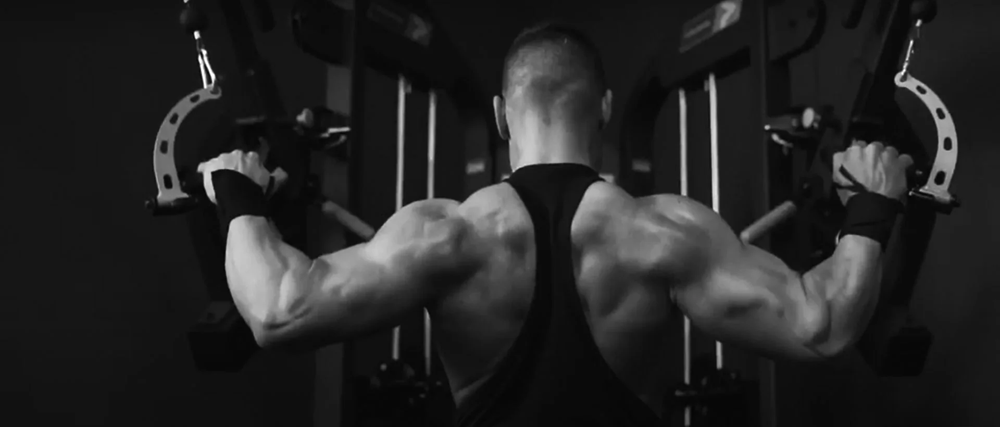

7 BÀI TẬP CHỮA YẾU SINH LÝ KHÔNG CẦN DÙNG THUỐC
Hoạt động thể chất đều đặn luôn là giải pháp tối ưu để duy trì sức khỏe và khả năng tình dục của nam giới được các chuyên gia khuyến nghị. Pete McCall, MS, một nhà sinh lý học và huấn luyện viên cá nhân cho Hội đồng Tập thể dục Hoa Kỳ (ACE) cho biết: “Tập thể dục ba đến bốn lần một tuần có thể giúp ích rất nhiều cho sức khỏe tình dục, tạo sự linh hoạt và sức bền của nam giới”. Trong bài viết này sẽ giới thiệu đến anh em một số bài tập chữa yếu sinh lý đơn giản, dễ tập mang lại hiệu quả cao.
Chữa yếu sinh lý không dùng thuốc có hiệu quả hay không?
Yếu sinh lý có nhiều mức độ nặng, nhẹ khác nhau, tùy vào tình trạng sinh lý mà có cách chữa trị khác nhau. Hiện nay, yếu sinh lý có một số cách chữa trị như: điều trị không dùng thuốc bằng việc điều chỉnh lối sống, ăn uống, vận động…; điều trị bằng thuốc (thuốc Đông y và Tây y); sử dụng vật lý trị liệu hoặc phẫu thuật. (1) Chữa yếu sinh lý không dùng thuốc thường áp dụng cho những trường hợp nhẹ, đòi hỏi việc điều trị phải kiên trì mới có thể mang lại hiệu quả. Tuy nhiên, với những người yếu sinh lý ở mức độ nặng, hoặc việc điều trị không dùng thuốc không còn đạt hiệu quả thì cần điều trị bằng y tế. Qua thăm khám, người bệnh sẽ được kiểm tra, làm xét nghiệm, từ đó sẽ có chẩn đoán và có phác đồ điều trị cụ thể.
Những bài tập hỗ trợ yếu sinh lý hiệu quả
Có rất nhiều bài tập nâng cao sức khỏe thể chất, tuy nhiên để tăng cường khả năng sinh lý của đàn ông, những bài tập sau đây sẽ giúp ích cho bạn.
1. Bài tập Kegel hỗ trợ tăng cường sinh lý
Bài tập Kegel do bác sĩ phụ khoa người Mỹ Arnold Kegel Henry “phát minh”, được coi là bài tập rất hữu ích cho sinh lý của nam giới. Bài tập làm khỏe cơ sàn chậu và hỗ trợ bàng quang, đại tràng, giúp vùng “nhạy cảm” của quý ông trở nên nhanh nhạy và khỏe mạnh hơn. Theo chuyên gia McCall, đàn ông có thể sử dụng Kegel để trì hoãn xuất tinh bằng cách co các cơ này trước khi đạt cực khoái. Việc siết chặt các cơ giúp nam giới kiểm soát dòng chảy của nước tiểu và tinh dịch (khi bị rối loạn cương, nam giới sẽ không kiểm soát được điều này).
Cách thực hiện
Trước khi tiến hành tập luyện, cần nắm được vị trí của các cơ sàn chậu cũng như kỹ thuật thực hiện bài tập để đạt hiệu quả tốt nhất.